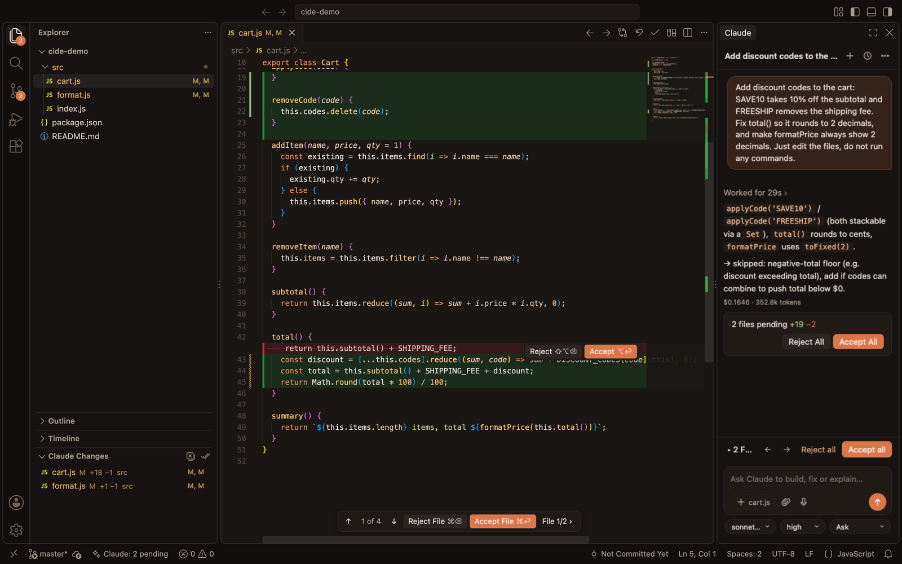
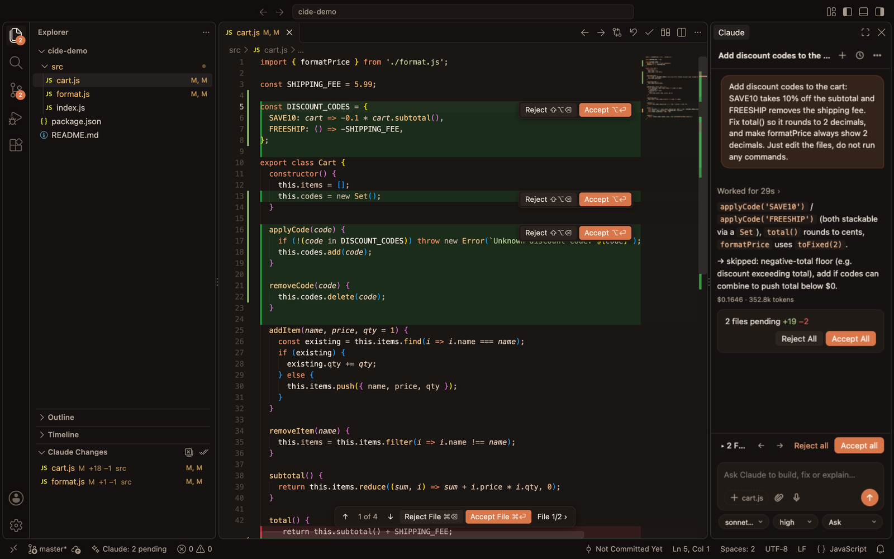
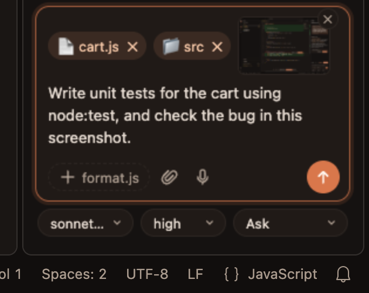
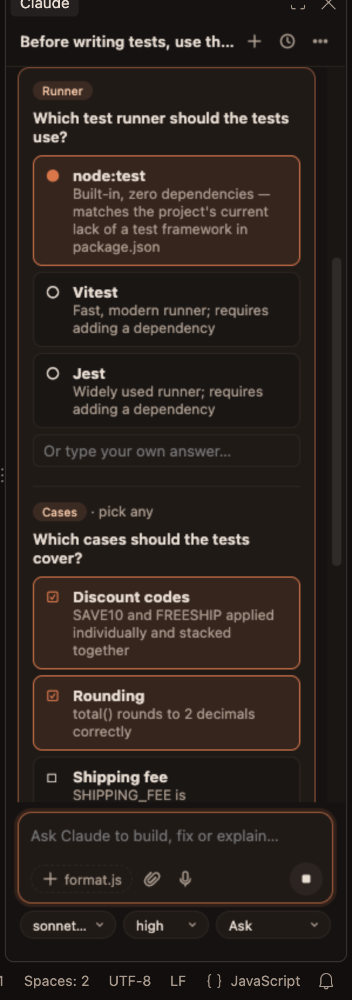

Review AI edits the way you review a pull request
Claude works freely. Every file it touches lands in a review stack, and nothing is final until you accept it.

total() in a JavaScript cart: the old line in red, the new code in green.Inline review, inside the real file
Removed lines stay visible in red, struck through, above their replacement. Every change has its own Accept and Reject buttons, and a floating bar shows 1 of 4 with keyboard shortcuts to move through changes and files.
Reject restores the original file byte for byte. New files are removed.

A review stack across every file
All of Claude's edits in a turn, including files changed by shell commands like sed -i or code generators, collect in one list. Accept per change, per file, or everything at once. Restore to here undoes everything after any message.
Drag anything into the chat
Drop files, folders and screenshots from the Explorer or Finder onto the chat panel. No Shift key, no typing paths. Paste screenshots too.
Claude asks, you choose
When Claude needs a decision it shows a question card: single or multiple choice, with your own answer on every question.
Four permission modes
Auto, Ask (stage everything for review), Ask each edit, and Plan (read-only until you approve the plan).
Offline voice input
Dictate prompts with the mic button. Speech is transcribed locally with whisper.cpp; nothing leaves your Mac.
History shared with the CLI
Uses the same agent, settings, CLAUDE.md files, hooks and MCP servers as the claude command-line tool, with the same conversation history.
A calm, focused editor
A warm dark theme, the agent panel on the right, no Copilot sign-in prompts, and extensions from Open VSX.


How it compares
Claude IDE runs the same agent as the official VS Code extension. The difference is the editor built around reviewing its work.
| Official VS Code extension | Claude IDE | |
|---|---|---|
| Reviewing edits | Manual mode pauses on each edit with a side-by-side diff; Auto mode applies edits without review | Claude keeps working; all edits collect in a review stack you go through afterwards, like Cursor |
| Where you review | A separate diff view per proposed edit | Inside the real file: removed lines in red, per-change Accept / Reject, a floating review bar |
| Shell command changes | Not part of the edit review | Reviewed like any other change |
| Attaching files | Hold Shift while dragging; paste images | Just drag files, folders or screenshots; paste images |
| Voice | — | Offline dictation |
Download Claude IDE
Free for macOS on Apple silicon (M1 or later).
- Install the
claudecommand-line tool and sign in once: runclaude, then/login. - Open the
.dmgand drag Claude IDE into Applications. - The app isn't notarized yet, so on first launch right-click it → Open → Open, or run:
xattr -dr com.apple.quarantine "/Applications/Claude IDE.app"
Prefer your own editor? The .vsix extension works in VS Code, Cursor and other VS Code-based editors.
Build from source
git clone https://github.com/error404sushant/claude-ide.git cd claude-ide ./build-app.sh
FAQ
What is Claude IDE?
An open-source AI code editor for macOS. It's a fork of Code - OSS (the open-source core of VS Code) with a Claude agent panel and an inline review system for every change the AI makes.
Is Claude IDE free?
Yes, the editor is free and open source. It uses your existing Claude account or an API key for the AI itself.
Is it a Cursor alternative?
Yes. Like Cursor, it lets the AI edit freely and then shows every change inline with Accept and Reject buttons, but it runs the Claude agent with its full set of tools.
Does it work on Windows or Linux?
The app is macOS-only for now. The extension (.vsix) works in VS Code on Windows and Linux.
Can I use my VS Code extensions?
Yes, from the Open VSX registry, which has most popular extensions.